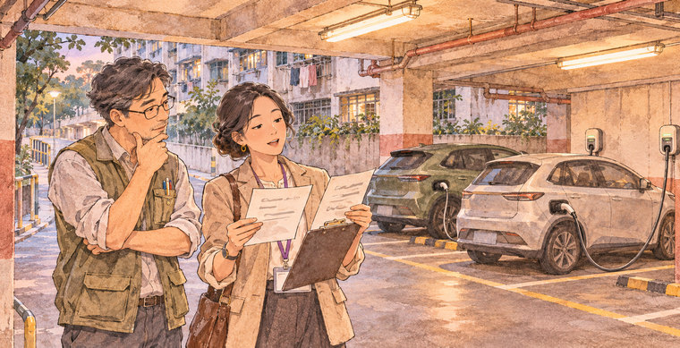

SUS-41 · Hong Kong · 15 minutes · Electric vehicle charging · Infrastructure capacity · Load management · Service reliability
The chargers arrive. Can the building feed them?

Hong Kong retrofits residential car parks for EV charging
In May 2026, Hong Kong’s government reported that 488 existing residential car parks had completed installation works under the EV-charging at Home Subsidy Scheme by the end of March. The works provide charging-enabling infrastructure, not the individual chargers. The estate and numbers below are fictional.
Your classroom decision
Mei manages an older fictional Hong Kong housing estate with 20 bays fitted with 7 kW chargers. The committee must choose between sharing spare building capacity and paying for an electrical upgrade. An engineer has already assessed both options; these are simplified planning inputs, not installation instructions.
On the design night, 18 cars plug in at 20:00 and each needs 12 kWh at the charger output. Eight leave at midnight; ten leave at 04:00. The charger controller can share power across plugged-in cars and prioritize earlier departures. The estate promises all drivers their full 12 kWh by departure.
The exhibit gives aggregate power available to charging after reserving capacity for other uses. Ignore charging losses, power tapering and all cost differences except those stated. A night costs HK$50 under Share or HK$130 under Upgrade, including the assumed nightly equivalent of each option’s fixed costs.
| Fictional engineering limit | 20:00–00:00 | 00:00–04:00 |
|---|
| Share: aggregate charger-output limit | 24 kW | 42 kW |
| Upgrade: aggregate charger-output limit | 48 kW | 48 kW |
Your decisionWhat is the total installed rating across all 20 charger bays? How many kWh can Share deliver in each window, and can it keep both departure promises? Which option would you approve for this demand profile?
Round 2 · More information
The committee learns that three of the ten later drivers now leave at midnight; the same 18 cars still need 12 kWh each. An off-site operator can guarantee up to three 12 kWh sessions before midnight at HK$35 each, paid by the estate. Exactly the drivers assigned those slots have their full need met off site. Assume they accept and travel time does not affect their departure.
Your decisionCan Share still keep both promises without an off-site arrangement? How many off-site slots would it need, and which feasible option now costs less? What measurement would justify revisiting that choice?
Debrief · Separate rate from quantity
The connected rating is 20 × 7 = 140 kW; it is not the available simultaneous power. Share delivers at most 24 × 4 = 96 kWh before midnight and 42 × 4 = 168 kWh afterward. The combined maximum is 264 kWh, but it cannot all be used before midnight.
Debrief · Check each deadline
Eight early cars need 96 kWh, exactly Share’s first-window capacity. They can each receive an average 3 kW. Ten later cars need 120 kWh, which fits the second window at an average 3 kW each. These rates are below the individual 7 kW cap. Both options can deliver 216 kWh by the required deadlines; choose Share at HK$50, while noting it has no first-window buffer.
Debrief · More total energy does not fix an early shortage
Eleven early cars now need 132 kWh and seven later cars need 84 kWh. The total remains 216 kWh. Share falls 36 kWh short before midnight even though its combined limit still exceeds 216 kWh. Three 12 kWh off-site slots remove exactly the early shortfall. Share plus those slots costs HK$155. Upgrade can meet both deadlines with 192 kWh available in each window and costs HK$130, HK$25 less.
Debrief · Test the switch point
If only ten cars left early, Share would need two off-site slots and cost HK$120, less than Upgrade’s HK$130. Ask for a representative departure-time and requested-energy profile, an engineer’s check of available capacity under peak building loads, and evidence that off-site slots are reliably available. A change in actual early demand or quote can reverse the decision.
Instructor note
Spend 2 minutes on the story, 4 on the first window calculation, 4 on updated departures, and 5 on the recommendation. Compare a fixed deadline to total nightly capacity. This is a stylized management exercise, not electrical design, cost engineering, or evidence of real-world emissions savings.
Round two
The committee learns that three of the ten later drivers now leave at midnight; the same 18 cars still need 12 kWh each. An off-site operator can guarantee up to three 12 kWh sessions before midnight at HK$35 each, paid by the estate. Exactly the drivers assigned those slots have their full need met off site. Assume they accept and travel time does not affect their departure.
Your decisionCan Share still keep both promises without an off-site arrangement? How many off-site slots would it need, and which feasible option now costs less? What measurement would justify revisiting that choice?